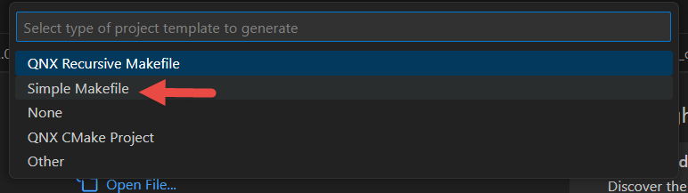

You can create several different types of projects. For the purpose of this guide, you'll create a Simple Makefile project for QNX.
| Project Type | Recommended usage |
|---|---|
| QNX Recursive Makefile | To create an application or library project which uses QNX's recursive make build system. |
| Simple Makefile | To build a QNX OS application or utility using a traditional makefile. |
| None | To create an empty QNX project. |
| QNX CMake Project | To create an application or library project which uses the CMake build system, in conjunction with the QNX compiler tool chain. |
| Other | To create a custom project. |
You can create a simple, GNU-style makefile.
To create a simple makefile project:

To generate an example project:
The project is created and you can view the directory structure in the Workspace.